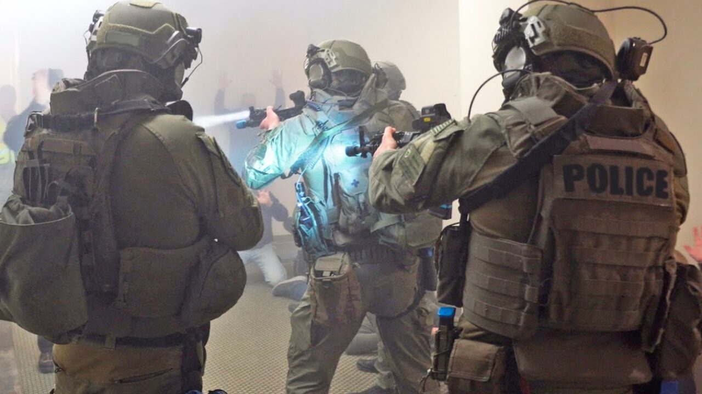

Streaming Video Games
Globally video games live-streaming is most popular. This only means the possibility of cyber-risks are more likely.
Adin Ross
Adin Ross is one of the top video game live-streamers in the world, bringing in roughly 60,000 viewers per stream. Although people love to watch this streamer, they don't understand how scary it can be for Adin. Top streamers such as Adin, Nadia, and IShowSpeed are big targets to be doxxed. Adin also experienced unauthorized access to his computer during one of his "Call of Duty" related streams, leading to the access of unsolicited content. In addition to being doxxed, Adin as well as other big name streamers find themselves being "swatted" very often.
Measurements You Can Take
Specific measures one can take in order to lower the chances of these risks consist of enabling two-factor authentication. Twitch ensures that login ID's and passwords are safe with "bcrypt", a powerful password hashing algorithm widely used. Although big name company's like Twitch ensures this measurement of safety, two-factor can only strengthen this promise.
